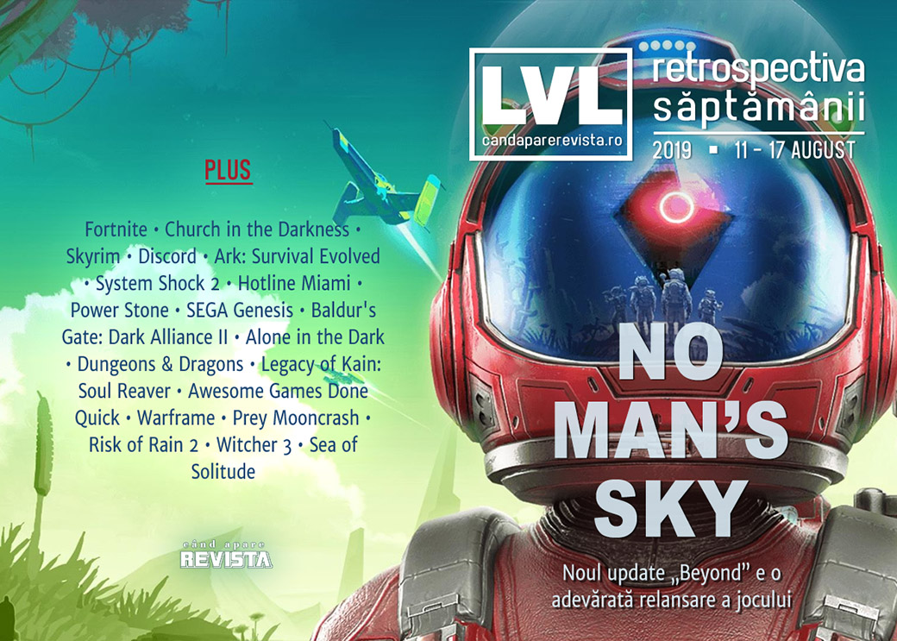

Retrospectiva săptămânii 11 - 17 august
O săptămână și mai săracă în știri decât precedenta, dar avem mai multe aniversări și retrospective - Legacy of Kain: Soul Reaver, System Shock 2 și SEGA Genesis, plus anunțuri interesante: o ediție îmbunătățită pentru System Shock 2, un nou Need for Speed, două titluri ACE Team și… King’s Bounty 2. Și s-a lansat un nou (și cel mai mare de până acum) update pentru No Man’s Sky, ajuns acum la ani lumină de starea în care s-a lansat.
Linkuri rapide:

Știri
- Campionul recent încheiatului campionat mondial de Fortnite a fost ținta unui incident de tip swatting chiar în timpul unui stream live. Vizita polițiștilor s-a încheiat însă rapid, fără victime sau incidente. (Ars Technica, PC Gamer, Eurogamer, The Guardian, VG247)
- My.Games, divizia de gaming a companiei rusești Mail.ru, va lansa un magazin digital de jocuri care se va adresa pieței internaționale. (GamesIndustry.biz, PCGamesInsider.biz, Gamasutra, VentureBeat)
- Streamer-ul de care scriam săptămâna trecută că a fost vizitat de investigatori privați trimiși de 2K și-a închis canalul de YouTube și toate celelalte conturi de pe rețelele sociale. (Eurogamer, PC Gamer)
- Trade-N-Games, un magazin de jocuri din SUA, a fost ținta unui jaf, hoții golind un seif cu aproape 150 de jocuri rare în valoare de peste 100.000 de dolari. (TechRaptor)
Articole (critică, dev, design)
- Video game corporate satire is really overdue an upgrade (Eurogamer)
- What goes right and wrong when games like Diablo 3 take a decade to make (Polygon)
- The people who watch video games, but never play them (Polygon)
- Why we now talk about politics in games so much (Eurogamer)
- Finding Human Interest Stories in Virtual Reality (Hyperallergic )
- Applying Videogame Theory to Escape Rooms: the Definition of a "Game" (Gamasutra)
- The Uncertain Future of Video Game History (EGM)
- How an Online Mob Created a Playbook for a Culture War (NY Times)
Reportaj
Not-a-review
- No Man's Sky Beyond Is Finally Feeling Like the Game I Wanted Three Years Ago (USgamer)
- A Mysterious Cult Isn't Enough for the Repetitive 'Church in the Darkness' (Vice)
- In praise of Skyrim's oldest mystery (The Face)
Industrie
- Phil Spencer Doesn’t Think That Cloud Systems Will Fully Replace Traditional Consoles Just Yet (Gamespot)
- Stop asking "is it political?" It always is (GamesIndustry.biz)
- Discord Explains How It Handles Harassment, Doxxing, and Threatening Behaviour (Kotaku)
- How Ark: Survival Evolved "fell into sustainable revenue" without skins or loot boxes (GamesIndustry.biz)
- Phil Spencer Is Exactly Who You Think He Is (Gamespot)
Istorie, retrospectivă
- The Timeless Horror of 'System Shock 2' (Vice)
- How one phone call saved a tiny new studio and gave the world System Shock 2 (PC Gamer)
- The messy story behind the Hotline Miami mod that never was (Eurogamer)
- Power Stone: the Dreamcast brawler that foresaw Fortnite and Overwatch (The Guardian)
- Sega Genesis at 30: the console that made the modern games industry (The Guardian)
- Member Baldur's Gate: Dark Alliance II? (Hardcore Gamer)
- Alone in the Dark (The Digital Antiquarian)
- The Game Archaeologist: Dungeons & Dragons (Massively OP)
- As Legacy of Kain: Soul Reaver turns 20, let’s remember why it was brilliant (Eurogamer)
- The Origins of Awesome Games Done Quick (EGM)
Dev, making of, mecanici
- Making A Better Card Feel Worse With UX (Tom Francis Blog)
- What we can learn from… Warframe (GamesIndustry.biz)
- Like a boss: The secrets behind great boss design (GamesIndustry.biz)
- How Prey Mooncrash Gave us a AAA RogueLike (Gamasutra)
- How moving from 2D to 3D shaped the design of Risk of Rain 2 (Gamasutra)
Design, world-building, artă
- Planning Novigrad (Unwinnable)
- How the creators of Sea of Solitude turned fear and anxiety into monsters (The Verge)
- Your View Inside of Atlus’ Amazing Art Exhibit Dedicated to Persona 5 and Catherine (Game Informer)
- Star Wars: A Studio Ghibli Story (Kotaku)
- Rush Hour (Kotaku)
Anunțuri și lansări de jocuri
- Shantae and the Seven Sirens reveals title, plot details and first screenshots (Destructoid)
- A New Saints Row Is On The Way (Games Informer)
- 4A Games is working on the next Metro game (DSOGaming )
Anunţate
- System Shock 2: Enhanced Edition (Shacknews). Și, legat de asta: System Shock 2 Has Been Getting New Patches For Years, Based On The Work Of A Fan Nobody Can Find (Kotaku)
- Need for Speed Heat (Kotaku)
- Liberated (Polygon)
- Still There (GameSpace)
- Rock of Ages 3: Make & Break (PC Gamer)
- Project Thalassa (PCGamesInsider.biz)
- King’s Bounty 2 (PC Gamer)
- The Eternal Cylinder (RPS)
- The Falconeer (Wccf tech)
Acum cu dată de lansare
- Telling Lies: 23 august (Destructoid)
- Knights and Bikes: 27 august (Eurogamer)
- Nauticrawl: 16 septembrie (PC Gamer)
- Session (early access): 17 septembrie (PC Gamer)
- Daymare: 1998: 17 septembrie (DSOGaming )
- Doraemon Story of Seasons: 11 octombrie (Destructoid)
Amânate
- Spelunky 2: 2020 în loc de 2019 (Games Informer)
Anulate
- Lazarus (Eurogamer)
Lansate
- 12 august: Anodyne 2: Return to Dust (Steam)
- 12 august: Eliza (Steam, gog.com)
- 13 august: Exception (Steam)
- 13 august: Dicey Dungeons (Steam)
- 13 august: Vicious Circle (Steam)
- 13 august: Rebel Galaxy Outlaw (Epic Store)
- 14 august: The Great Perhaps (Steam, gog.com)
- 15 august: Ion Fury (Steam, gog.com)
- 15 august: DARQ (Steam, gog.com)
- 15 august: Shortest Trip to Earth (iese din early access) (Steam, gog.com)
- 15 august: Lichtspeer: Double Speer Edition (Steam)
- 15 august: Hot Shot Burn (early access) (Steam)
- 15 august: FlowScape, un tool pentru crearea de scene 3D animate (Steam)
Prăvălii de jocuri
Știri
- Some Steam Workshop submissions now require moderator approval (PCGamesN)
- Epic Games Store update adds more cloud saves and Humble Bundle Keyless Integration (VG247)
- There’s a way to hide games on the Steam store that you already own elsewhere (Destructoid)
- Utomik crosses more than 1,000 PC games for subscription download service (VentureBeat)
Update catalog
- Grid 2 has been removed from Steam (PC Gamer)
- Total War: SHOGUN II – Fall of the Samurai joins the Total War Saga family (DSOGaming )
- Forza Motorsport 6 To Be Removed From Xbox Live Marketplace On September 15 (Games Informer)
Jocuri gratis și free weekends
- Hyper Light Drifter and Mutant Year Zero: Road to Eden are free at the Epic Games Store (Polygon)
- Mr Flipper is a free pinball game with one hell of a twist (PC Gamer)
- Play Galactic Civilizations III for free on Steam this weekend (GameSpace)
- New Free Steam Demo Is A Modern-Day Superman Game (Kotaku)
Retrospectiva săptămânii este rubrica duminicală în care trecem în revistă evenimentele săptămânii de pe frontul de gaming: știri şi articole (scrise de alții, bineînțeles, că e mai ușor aşa), industrie, lansări, oferte de jocuri, toate numai de savurat la cafeaua de duminică dimineața.
De asemenea, rubrica e deschisă oricui vrea și poate contribui. Dacă ai citit vreun articol sau vreo știre interesantă și crezi că merită incluse în retrospectiva săptămânii, te așteptăm pe forum pe unul dintre topicurile dedicate: Știri, Articole, Gaming România].